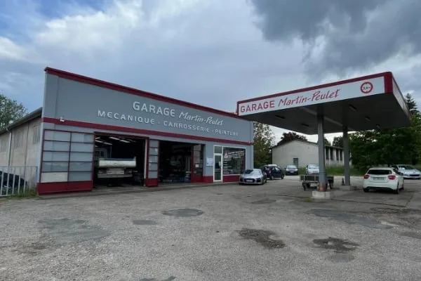

Ils en parlent
6 avis contrôlés par Plus que pro, avec pièce justificative. Note moyenne : 4,8 sur 5.

Neuville-les-Dames · 03/2025« Je n’ai pas eu de devis préalable mais le montant de la facture était correct pour la prestation. Jamais de mauvaise surprise. »
Neuville-les-Dames · 03/2025« Toujours satisfaite des prestations fournies et de l’accueil. »
Neuville-les-Dames · 03/2025« L’équipe du garage est toujours très réactive à nos demandes, très arrangeante, disponible et compétente. »
Châtillon-sur-Chalaronne · 01/2025« Je suis très satisfaite des réparations et suivis effectués sur ma voiture. Je recommande ce garage. »
Chanoz-Châtenay · 12/2024« Travail bien effectué, équipe à l’écoute de nos besoins avec de bons conseils. Nos 2 voitures sont très bien suivies et entretenues ici. »
Condeissiat · 12/2024« Mécanicien passionné, très pro, à l’écoute du client. Je recommande les yeux fermés. »
Avis publiés sur le site actuel du garage (Plus que pro), reproduits tels quels.